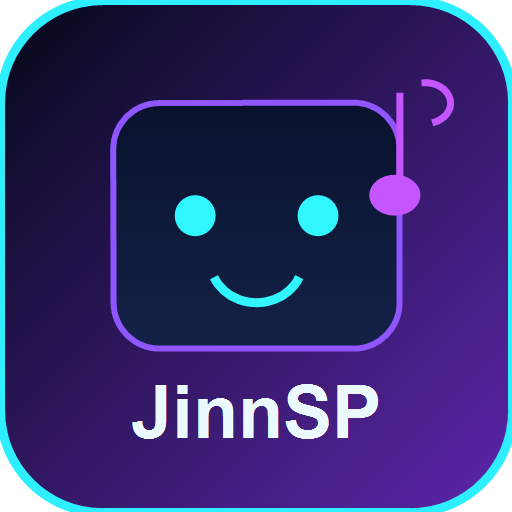

大規模ライブラリ対応
大量の曲を管理し、ライブラリ検索、Source、タグで絞り込めます。
JINN PROJECT / 公開アプリ
Your music, your way. JinnSPは、大量の楽曲、直接メディアURL、ローカルファイルを扱うための、インストール可能な音楽ライブラリ・プレイリストプレイヤーです。

主な機能
JinnSPは、特定の配信プラットフォームに閉じ込めず、実用的な管理と再生に集中した音楽プレイヤーです。
大量の曲を管理し、ライブラリ検索、Source、タグで絞り込めます。
プレイリストを作成し、その中だけを再生・シャッフル・検索できます。
ブラウザやAndroidの許可範囲でローカルファイルを扱い、R2などの直接HTTP/HTTPSメディアURLも再生します。
Queue、Repeat、Favorite、バックグラウンド再生、対応環境でのMedia Session / ロック画面表示を備えます。
編集用のCSV入出力と、復元用のJSONバックアップ・リストアを利用できます。
ブラウザから起動し、対応するPC・Android・iOS環境ではPWAとしてインストールできます。
対応環境
ローカルファイルやロック画面操作は、ブラウザとOSの仕様に左右されます。
モダンなChromium系ブラウザで、直接URL再生、CSV、バックアップ・リストア、PWAインストールを利用できます。ローカルファイルの保持はブラウザのファイル権限に依存します。
Capacitor版ではStorage Access Frameworkのフォルダアクセス、保存設定、バックグラウンド再生、Media Sessionを維持しています。
Safariとホーム画面PWAでの再生に対応します。ロック画面のNext/Previous表示はiOS側のMedia Session挙動に依存します。
Service Workerによりアプリ本体はキャッシュされます。リモート音源URLは通信が必要で、ローカルファイルは各プラットフォームの権限モデルに依存します。
スクリーンショット
リポジトリ内に実スクリーンショットはまだ保存されていないため、画像は捏造していません。
docs/images/jinnsp-library.png, docs/images/jinnsp-playlists.png, docs/images/jinnsp-playing.png, docs/images/jinnsp-mobile.pngSTART